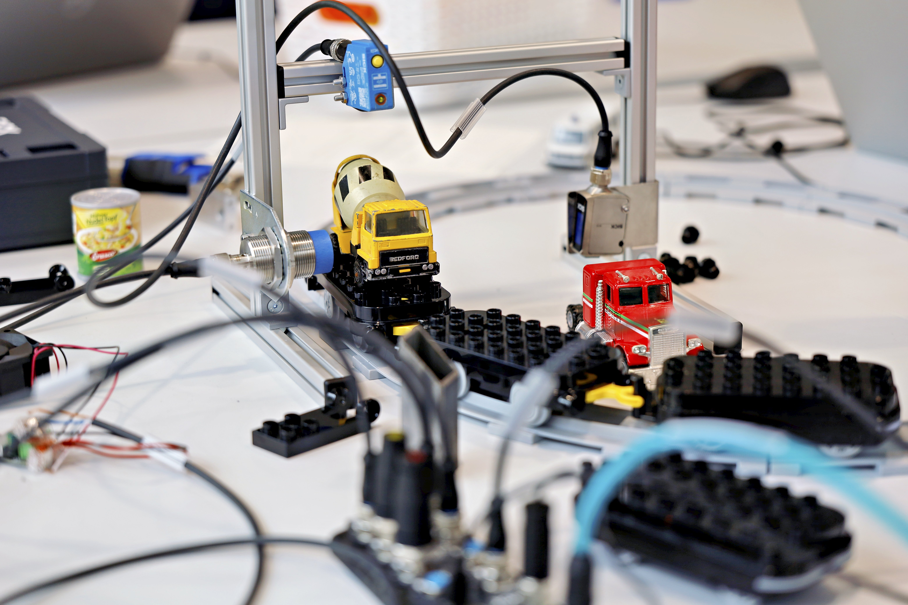
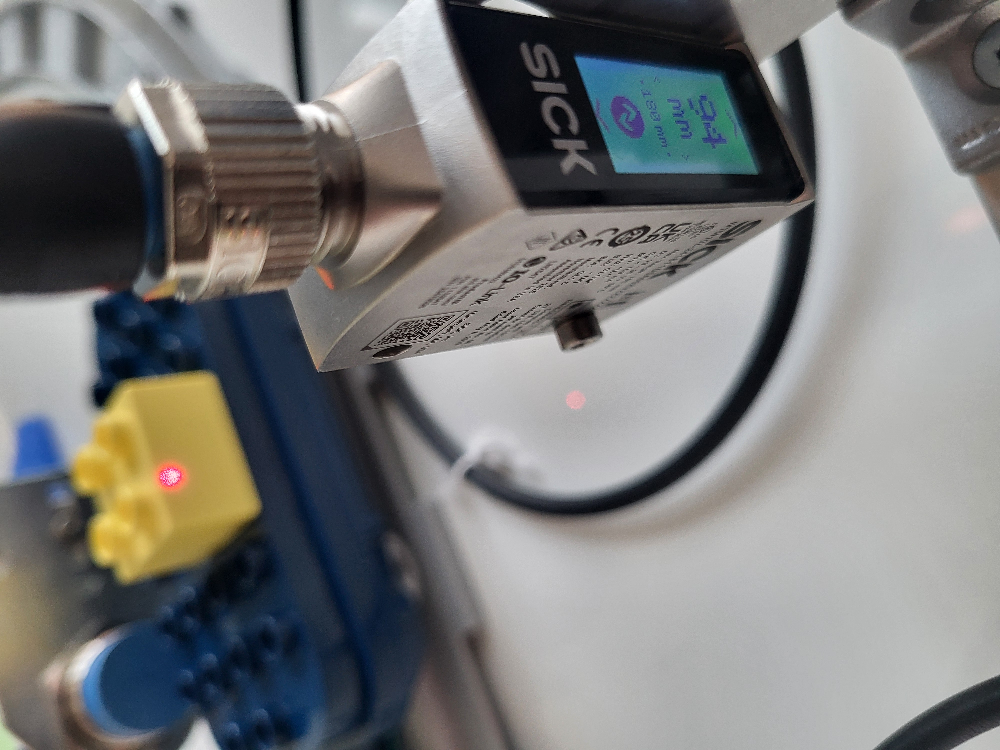
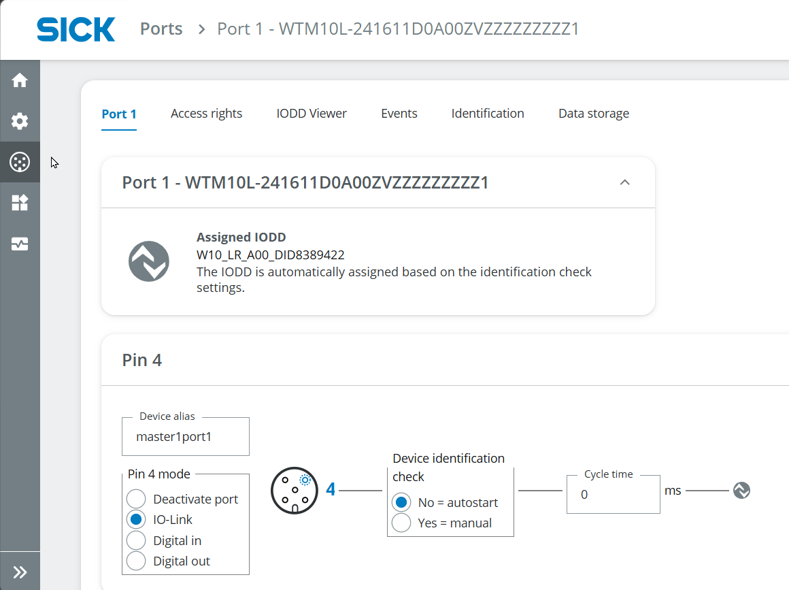
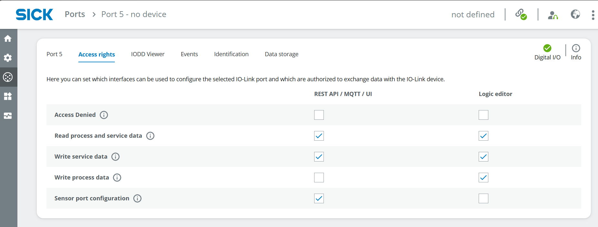
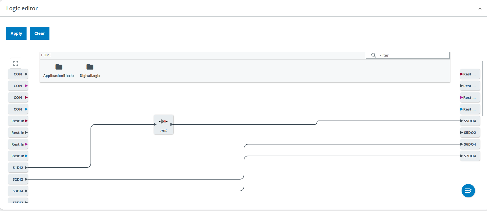
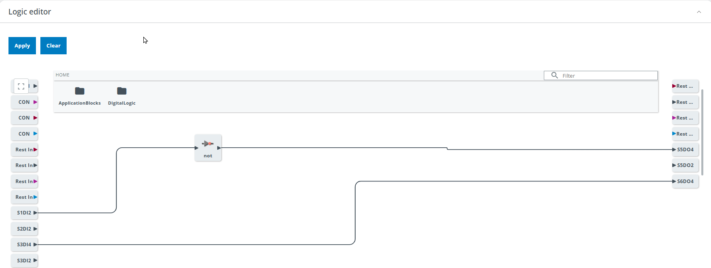
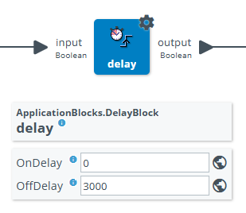

Smart Train Loop
Short Description
This advanced project demonstrates how multiple sensor technologies can be combined to analyze a train moving around a track loop.
The W10, UC12 and IMC30 are used for presence detection, distance measurement and the detection of metallic objects. The sensor results can be visualized using LEDs or an optional signal light tower. The required logic is created in the Logic Editor of the SIG300.
Project Information
| Project type | Required knowledge level | Estimated duration | Additional hardware and software requirements |
|---|---|---|---|
| Advanced Project | Advanced | 1 to 2 hours |
Mounting Kit Battery-powered train with tracks Metallic objects for the train wagons Optional: SLT |

Goal
The goal of this project is to build a smart gate that analyzes a train moving through the detection area.
The project combines different sensors to:
- detect the train
- determine whether a train wagon is loaded
- detect metallic objects on a train wagon
- visualize the sensor results with LEDs or an optional SLT
- combine the sensor signals in the Logic Editor of the SIG300
Project Concept
The project uses the three sensors included in the IO-Link Connectivity Starter Kit:
- the W10 photoelectric sensor
- the UC12 ultrasonic distance sensor
- the IMC30 inductive proximity sensor
Each sensor performs a different task. The results are combined in the Logic Editor of the SIG300 and can be displayed using the connected LEDs or an optional signal light tower.
Before You Start
Connect to the SIG300 user interface as described in the Getting Started guide.
If the optional Mounting Kit is used, assemble the mounting frame before positioning the sensors.
Project Setup
1. Connect the Devices
Connect the three sensors and the LEDs or optional SLT to the SIG300.
Example connection setup
An example connection setup is:
- SIG300 connected to the computer via USB-C
- S1: W10
- S2: UC12
- S3: IMC30
- S4: SLT or yellow LED
- S5: green LED
- S6: red LED
The green and red LEDs may initially blink because the corresponding ports are configured for IO-Link.
2. Define the Sensor Tasks
Think of a suitable task for each sensor.
Mount the sensors on the mounting frame using the supplied mounting brackets and tools.
Sensor information
W10
Photoelectric sensor that measures distance using an optical functional principle.
Measuring range:
https://www.sick.com/ag/en/catalog/products/detection-sensors/photoelectric-sensors/w10/wtm10l-241611d0a00zvzzzzzzzzz1/p/p678567
UC12
Ultrasonic distance sensor.
Measuring range:
https://www.sick.com/ag/en/catalog/products/distance-sensors/ultrasonic-distance-sensors/uc12/uc12-1223e/p/p665120
IMC30
Inductive proximity sensor that detects metallic objects.
Sensing range:
https://www.sick.com/ag/en/catalog/products/detection-sensors/inductive-proximity-sensors/imc/imc30-20nppvc0sa00/p/p483964?tab=detail
Example setup and tasks
UC12
Mount the UC12 at the top of the frame to detect the train. Keep the maximum measuring range in mind.
W10
Mount the W10 at the bottom of the other vertical bar to check whether a train wagon is loaded. Keep the minimum height of the objects on the wagon in mind.
IMC30
Mount the IMC30 at the bottom of one vertical bar to detect metallic objects on the train wagon. Keep the maximum sensing distance in mind.



3. Open the SIG300 User Interface
- Connect to the SIG300 user interface as described in the Getting Started guide.
- Log in as Service.
- Use the following password:
- Select Keep Default Password.
IODD Configuration
1. Check the IODD Files
- Select Application > IODD File Management.
- Check whether the IODDs for all connected sensors are available.

If an IODD is missing, download it from:
- the Downloads > Software section of the corresponding SICK product page
- https://ioddfinder.io-link.com/
Use the following device information when searching:
- W10:
WTM10x-xx1611xxA00xVxxxxxxxxxx - UC12:
6077702 - IMC30:
1079301 -
SLT060:
6075938 -
Assign the IODDs to the corresponding ports if this has not happened automatically.

Port Configuration
1. Configure the Sensors
The following example describes the configuration of the W10 at port S1.
The sensors can be used as digital inputs, for example to trigger a digital output such as an LED. They can also be used as IO-Link devices to communicate with other IO-Link devices such as the SLT.
- Open Ports > Port 1.
- Open the Access rights tab.
- Enable the required access rights.
The following access rights are relevant:
- Read process and service data
- Sensor port configuration

- Open the Port 1 configuration tab.
-
Check the following settings:
-
correct IODD assigned
- IO-Link selected
- Device Identification Check set to Yes
- Version set to V1.1
Relevant pins
Pin 4 is relevant for the SLT when it is used as an IO-Link device.
Pin 2 can be used for digital signals, for example when connecting the sensor result to an LED.

- Open the IODD Viewer tab.
- Select the measurement type at the top center.
- Read the current measurement value at the bottom center.
To define a trigger at a specific measurement value, adjust the corresponding sensor parameters.
For example, to trigger the W10 when the measured value is greater than 180 mm:
- Open Detection settings.
- Set Qint.1 SP1 sensing range to
180 mm. - Select High active.

Repeat the configuration for all sensors.
Different IODD Viewer layouts
The IODD Viewer can look different for each sensor because the sensors use different functional principles, parameters and integrated functions.
2. Configure the LEDs
The SLT is configured in a similar way to a sensor because it is used as an IO-Link device.
For simple digital outputs such as the included LEDs, use the following procedure:
- Open Ports and select the port used by the LED.
- Open the Access rights tab.
- Enable Write process data.

- Open the configuration tab for the corresponding port.
- Configure the pin used by the LED.
- Depending on the port configuration and access rights, toggle HI/LO to check whether the LED works.

Repeat the configuration for all LEDs.
Verify the port mode
The previous version of this guide specified Digital In for Pin 4, although the LED is controlled as a digital output.
Verify the required port mode in the SIG300 user interface and the applicable device instructions before finalizing the configuration.
Logic Editor
1. Create the Application Logic
The Logic Editor combines the digital sensor signals with the connected LEDs.
Apply changes
Always select Apply after changing the logic. Otherwise, the changes do not take effect.
- Open Application > Logic Editor.
- Create the logic for the connected sensors and LEDs.
- Use the tasks defined during the project setup.
The following examples show possible implementations.
2. Indicate Whether a Wagon Is Loaded
Light up the green LED if a wagon is loaded
Create a direct connection between the digital input of the W10 and the digital output of the green LED.
Example:
Drag the arrow from the input block on the left to the output block on the right.
Depending on the measurement result of the W10, the green LED should light up.
To invert the result, add the following logic block between the input and output:

3. Indicate Whether the Train Is Detected
Light up the red LED if the train is detected
The UC12 can detect objects within a defined area.
- Mount the UC12 according to its measuring range and the height of the train.
- Open the IODD Viewer.
- Check the measurement result and adjust the position of the UC12.
- Open SSC1: switch signal channel 1.
- Adjust the SP1 value.
- Select Low active.
UC12 SP1 value
The SP1 value described here is not a value in millimeters.

Open the Logic Editor and connect:
A NOT gate is not required because the logic is configured as Low active.

Select Apply and test the result.
4. Indicate Whether a Metallic Object Is Detected
Light up the yellow LED if a metallic object is detected
The IMC30 detects metallic objects within its sensing range.
- Mount the IMC30 according to its sensing range and the distance to the metallic objects on the wagon.
- Open the IODD Viewer.
- Check the measurement result.
- Adjust the position of the IMC30 if necessary.
No additional parameter needs to be configured for this example.
Open the Logic Editor and connect:

Select Apply and test the result.
5. Keep an LED Active for Three Seconds
Keep an LED active for three seconds after a trigger
Add a Delay block in the Logic Editor.
Set OffDelay to:
This delays the LED switching off for three seconds after the trigger signal ends.

Expected Result
After completing the project, the SIG300 should combine the configured sensor signals and control the connected LEDs or optional SLT.
Depending on the implemented logic:
- the green LED indicates whether a train wagon is loaded
- the red LED indicates whether the train is detected
- the yellow LED indicates whether a metallic object is detected
- a delay can keep an LED active for three seconds after a trigger
Reset
When the project is complete, select Clear in the Logic Editor to remove all blocks and connections.
Factory reset
A factory reset also deletes the uploaded IODD files.
Summary
In this advanced project, you combined the three sensors of the IO-Link Connectivity Starter Kit in a smart train application.
You worked with:
- the W10 photoelectric sensor
- the UC12 ultrasonic distance sensor
- the IMC30 inductive proximity sensor
- LEDs or an optional SLT
- IODD File Management
- port configuration
- the IODD Viewer
- the Logic Editor of the SIG300
The individual sensor results were connected to visual outputs representing different states of the train and its load.
Next Steps
Return to the IO-Link project overview or review the SensorFusion project.